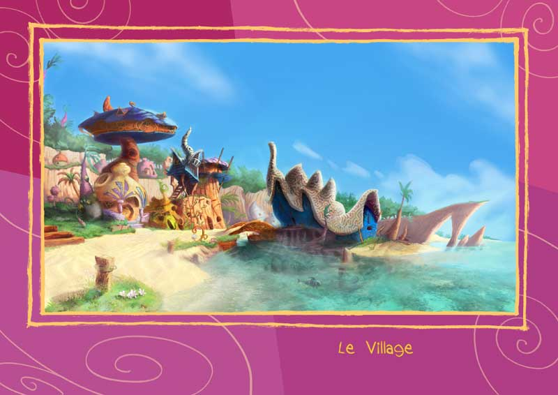
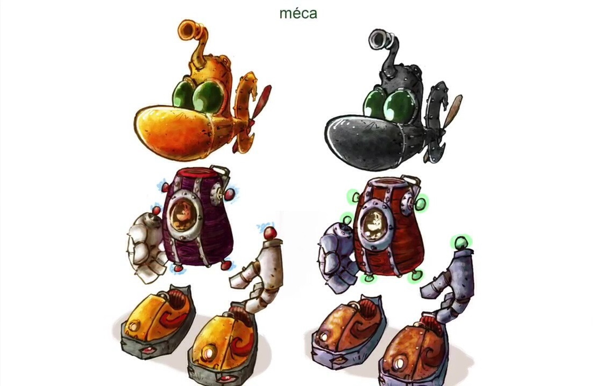
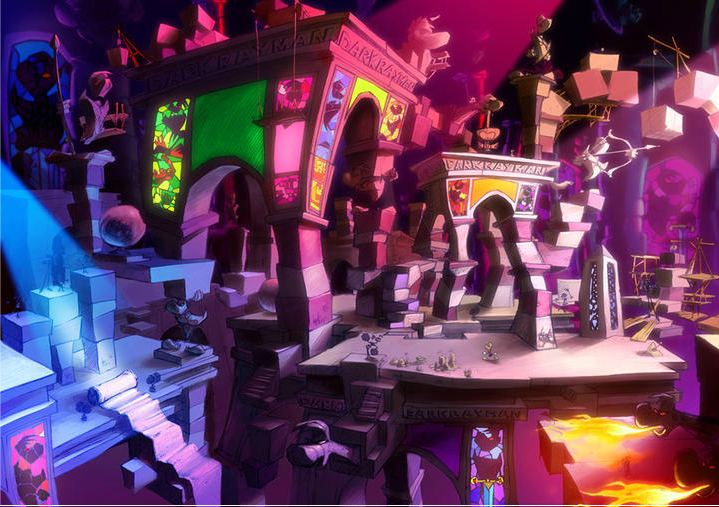

OVERVIEW
Rayman 4 was originally planned as a new mainline 3D platformer in the Rayman series.
Developed during the mid-2000s, the project aimed to expand the franchise with larger environments, new gameplay mechanics, and a more cinematic presentation.
During development, the game gradually shifted focus toward the Rabbids characters, eventually transforming into what became Rayman Raving Rabbids.
As a result, the original version of Rayman 4 was never officially released.
Trailer video of Rayman 4.

Concept art of village in Rayman 4
STORY
Early concepts for Rayman 4 followed Rayman as he attempted to stop an invasion of chaotic rabbit-like creatures later known as the Rabbids
The game appeared to feature surreal environments, exaggerated humor, and action-focused sequences across multiple worlds.
Prototype footage suggested a more adventurous and cinematic tone compared to previous Rayman titles, while still maintaining the series’ colorful and absurd atmosphere.
GAMEPLAY
Rayman 4 was designed as a 3D action-platform game focused on movement, combat, and environmental interaction.
Gameplay included:
- platforming
- melee combat
- puzzle-solving
- vehicle sections
- enemy encounters
The project also experimented with physics-based interactions and cinematic sequences uncommon for earlier Rayman games.
Several gameplay concepts later evolved into the mini-game structure used in Rayman Raving Rabbids.
Gameplay of Rayman 4.

Power up of Rayman Sub
DEVELOPMENT
Development began at Ubisoft Montpellier under the supervision of Michel Ancel.
As production continued, the Rabbids characters became increasingly popular within the studio, eventually overtaking the original direction of the project.
The game underwent major redesigns before Ubisoft decided to transform it into a launch title for the Nintendo Wii.
Only prototype footage, early trailers, and concept material from the original Rayman 4 survived.
CANCELLATION & LEGACY
The original version of Rayman 4 was never officially completed.
Instead of releasing the planned platform game, Ubisoft reworked the project into Rayman Raving Rabbids, shifting the focus toward party-game mechanics and the Rabbids characters.
This decision permanently cancelled the original vision of Rayman 4.
Although parts of the project evolved into another game, the cancelled version of Rayman 4 remains highly discussed among Rayman fans and game preservation communities.
Prototype videos and leaked footage continue to circulate online, offering a glimpse into an alternative direction for the franchise before the Rabbids became Ubisoft’s primary focus.

Lair of dark rayman.